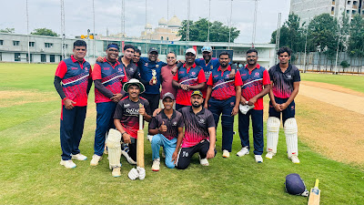
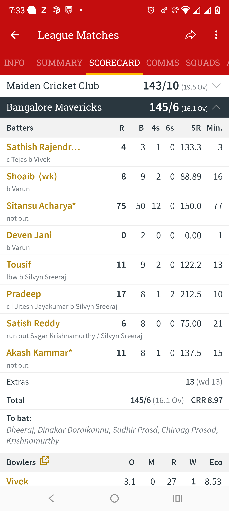

🏏 Playing Through Pain – A Knock to Remember
In the ongoing Samaprasiddhi T20 Cricket tournament, one of the most competitive local leagues around, we, the Bangalore Mavericks had played two matches already. With one win and one loss under our belt, our third game against Maiden Cricket Club was crucial to stay in the top two on the points table.
We lost the toss and were asked to bowl first. Our spinners did a brilliant job, picking wickets at regular intervals and keeping the pressure on. I was bowling the 17th over, and that's when everything changed.
A hard-hit shot came straight at me. As I instinctively reached out to grab it during my follow-through, the ball slammed directly into my right thumb. The pain was instant and intense. My teammates rushed in, I couldn't move my thumb and felt a sharp numbness. After a quick spray, I told myself, "Let's finish this over no matter what."
Despite struggling to grip the ball properly, I completed the over conceding 6 runs and then left the field to rest and apply ice.
Meanwhile, our bowlers wrapped up the innings — Maiden CC were all out for 143 in 19.5 overs. A solid bowling performance, which gave us a clear target.

The Task Ahead
As we prepared to chase, our captain Sathish turned to me and said, "You alright to open?"
I was still in pain but said yes. I couldn't even wear my gloves properly. Seeing me struggle, he suggested I come in at No. 3 instead.
Unfortunately, we lost a wicket on the third ball of our innings. Suddenly, I was walking out to bat, unsure of how badly I was injured, and whether I could even hold the bat.
From the first ball, it was clear: my right hand was nearly unusable. I could barely grip the bat and had to rely mostly on my left hand. Still, I thought "Let me make the most of the Powerplay. If I can score quick runs, I'll get out if it becomes too painful."
One-Handed Hustle
I had no control on the off side. Everything I hit had to be on the leg side, where I could swing naturally. I missed quite a few deliveries outside off, but managed to connect with a few on the leg and get some crucial boundaries. Slowly, I adapted.
The opposition quickly figured out my limitation and started bowling wide outside off. I began shuffling across the crease to access deliveries and keep the scoreboard ticking.
At the other end, though, wickets were falling. By the end of 6 overs, we were 41/3. By the 9th, we were 80/5. The sledging started, loud and constant — they knew I was the key. That's when I made up my mind: "I'm going to finish this game."
Grit Over Glamour
With the help of a short 20-run partnership, we reached 102/5. The pain was now constant — gripping the bat, running between the wickets, and even defending was tough.
Then came a moment of joy: I reached my fifty in just 34 balls. The dugout erupted in cheers. That gave me the adrenaline I needed to stay focused.
By 16.1 overs, we reached the target 145/6, and I remained unbeaten on 75 off 50 balls, with 12 boundaries. We won the match, retained our second spot on the table, and I was awarded Player of the Match.

The Aftermath
I've scored bigger knocks before. But this one? It felt different. It meant more.
It